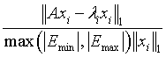

Intel® oneAPI Math Kernel Library Developer Reference - Fortran
Extended Eigensolver RCI interface.
call sfeast_srci (ijob, n, ze, work, workc, aq, sq, fpm, epsout, loop, emin, emax, m0, lambda, q, m, res, info)
call dfeast_srci (ijob, n, ze, work, workc, aq, sq, fpm, epsout, loop, emin, emax, m0, lambda, q, m, res, info)
call cfeast_hrci (ijob, n, ze, work, workc, aq, sq, fpm, epsout, loop, emin, emax, m0, lambda, q, m, res, info)
call zfeast_hrci (ijob, n, ze, work, workc, aq, sq, fpm, epsout, loop, emin, emax, m0, lambda, q, m, res, info)
Compute eigenvalues as described in Extended Eigensolver RCI Interface Description.
INTEGER
Job indicator variable. On entry, a call to ?feast_srci/?feast_hrci with ijob=-1 initializes the eigensolver.
INTEGER
Sets the size of the problem. n > 0.
REAL for sfeast_srci
DOUBLE PRECISION for dfeast_srci
COMPLEX for cfeast_hrci
COMPLEX*16 for zfeast_hrci
Workspace array of size n by m0.
COMPLEX for sfeast_srci and cfeast_hrci
COMPLEX*16 for dfeast_srci and zfeast_hrci
Workspace array of size n by m0.
REAL for sfeast_srci
DOUBLE PRECISION for dfeast_srci
COMPLEX for cfeast_hrci
COMPLEX*16 for zfeast_hrci
Workspace arrays of size m0 by m0.
INTEGER
Array, size of 128. This array is used to pass various parameters to Extended Eigensolver routines. See Extended Eigensolver Input Parameters for a complete description of the parameters and their default values.
REAL for sfeast_srci and cfeast_hrci
DOUBLE PRECISION for dfeast_srci and zfeast_hrci
The lower and upper bounds of the interval to be searched for eigenvalues; emin ≤ emax.
INTEGER
On entry, specifies the initial guess for subspace size to be used, 0 < m0≤n. Set m0 ≥ m where m is the total number of eigenvalues located in the interval [emin, emax]. If the initial guess is wrong, Extended Eigensolver routines return info=3.
REAL for sfeast_srci
DOUBLE PRECISION for dfeast_srci
COMPLEX for cfeast_hrci
COMPLEX*16 for zfeast_hrci
On entry, if fpm(5)=1, the array q of size n by m contains a basis of guess subspace where n is the order of the input matrix.
On exit, the parameter carries the status flag that indicates the condition of the return. The status information is divided into three categories:
A zero value indicates successful completion of the task.
A positive value indicates that the solver requires a matrix-vector multiplication or solving a specific system with a complex coefficient.
A negative value indicates successful initiation.
A non-zero value of ijob specifically means the following:
ijob = 10 - factorize the complex matrix Ze*B - A at a given contour point Ze and return the control to the ?feast_srci/?feast_hrci routine where Ze is a complex number meaning contour point and its value is defined internally in ?feast_srci/?feast_hrci.
ijob =11 - solve the complex linear system (Ze*B - A)*y = workc(n, m0), put the solution in workc(n, m0) and return the control to the ?feast_srci/?feast_hrci routine.
ijob =20 - factorize the complex matrix (Ze*B - A)H at a given contour point Ze and return the control to the ?feast_srci/?feast_hrci routine where Ze is a complex number meaning contour point and its value is defined internally in ?feast_srci/?feast_hrci.
The symbol XH means transpose conjugate of matrix X.
ijob = 21 - solve the complex linear system(Ze*B - A)H*y = workc(n, m0), put the solution in workc(n, m0) and return the control to the ?feast_srci/?feast_hrci routine. The case ijob=20 becomes obsolete if the solve can be performed using the factorization computed for ijob=10.
The symbol XH mean transpose conjugate of matrix X.
ijob = 30 - multiply matrix A by q(n, i:j), put the result in work(n, i:j), and return the control to the ?feast_srci/?feast_hrci routine.
i is fpm(25), and j is fpm(24) + fpm(25) - 1.
ijob = 40 - multiply matrix B by q(n, i:j), put the result in work(n, i:j) and return the control to the ?feast_srci/?feast_hrci routine. If a standard eigenvalue problem is solved, just return work = q.
i is fpm(25), and j is fpm(24) + fpm(25) - 1.
ijob = -2 - rerun the ?feast_srci/?feast_hrci task with the same parameters.
COMPLEX for sfeast_srci and cfeast_hrci
COMPLEX*16 for dfeast_srci and zfeast_hrci
Defines the coordinate along the complex contour. All values of ze are generated by ?feast_srci/?feast_hrci internally.
On output, contains coordinates of columns of work array needed for iterative refinement. (See Extended Eigensolver RCI Interface Description.)
REAL for sfeast_srci and cfeast_hrci
DOUBLE PRECISION for dfeast_srci and zfeast_hrci
On output, contains the relative error on the trace: |tracei - tracei-1| /max(|emin|, |emax|)
INTEGER
On output, contains the number of refinement loop executed. Ignored on input.
REAL for sfeast_srci and cfeast_hrci
DOUBLE PRECISION for dfeast_srci and zfeast_hrci
Array of length m0. On output, the first m entries of lambda are eigenvalues found in the interval.
On output, q contains all eigenvectors corresponding to lambda.
INTEGER
The total number of eigenvalues found in the interval [emin, emax]: 0 ≤ m ≤ m0.
REAL for sfeast_srci and cfeast_hrci
DOUBLE PRECISION for dfeast_srci and zfeast_hrci
Array of length m0. On exit, the first m components contain the relative residual vector:
generalized eigenvalue problem:
standard eigenvalue problem:

for i=1, 2, …, m, and where m is the total number of eigenvalues found in the search interval.
INTEGER
If info=0, the execution is successful. If info ≠ 0, see Output Eigensolver info Details.